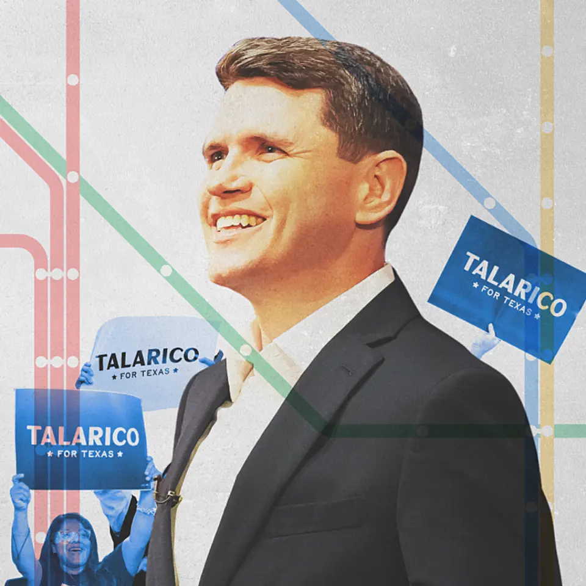

【歴史的】トランプ政権を「完全敗北」させた男
発行日時：2026-11-06 05:30:00 JST
NewsPicks原文を読む

あなたに関係ありそうな理由
米国の政治とAIインフラに影響し得る選挙結果を、具体的な選挙戦から考えられます。
概要
米中間選挙のテキサス州上院選で、民主党のジェームズ・タラリコ氏が勝利した。NewsPicksの記事は、共和党側が巨額の資金を投じた選挙戦を振り返り、同氏が生活に近い課題と宗教的な言葉をどう組み合わせたか、さらにAIインフラ政策にどんな影響があり得るかを解説している。
記事によると、予備選を含む同選挙には計5億7000万ドルが投じられ、米国の上院選で過去最高額となった。共和党側を支援するイーロン・マスク氏は個人で2億ドル超を投じたという。対立候補の陣営は、LGBTなどを巡る文化的な対立を利用した批判広告を展開したが、タラリコ氏の支持率は失速せず、最終的に12ポイント差で勝利したと記事は伝える。
元中学教師で神学を学ぶ同氏は、文化闘争よりも生活費、教育、医療、地域のつながりを重視して訴えた。移民政策への批判にも聖書を引き、保守的な地域に届く言葉を使ったと記事は分析する。表示コメントで塩崎悠輝氏は、同氏に州下院議員としての政治経験があることを補足し、ヒスパニック票の変動が勝因だとみる。木村真木子氏は、同氏が福音派ではなく長老派である点に注意を促している。
もう一つの論点がAIデータセンターだ。記事は、全米で計画される容量の約4分の1がテキサス州にあり、その規模は13.3ギガワットだと紹介する。同州では建設への反発も選挙の争点になった。タラリコ氏は大富豪による政治献金や議員の株取引を制限する法案を掲げており、今後の議会での動きが注目される。
一回の選挙結果だけで有権者全体の考えや政策の行方を決めつけることはできない。それでも、資金量や広告だけでなく、誰のどんな困りごとをどの言葉で伝えたかを考える材料になる。記事の分析とコメントの見解を分けて読み、当選後の具体的な提案を追いたい。
対立候補のケン・パクストン州司法長官はスキャンダルなどで不人気だったと記事は記す。タラリコ氏自身もインスタグラムで200万人以上のフォロワーを持ち、トランプ氏から討論を避けたと批判された際には応じる姿勢を示した。記事は、広告が大量に流れた時期にも世論調査のリードを保った点に注目している。
同氏は勝利後、地元で親しまれる飲食店で州知事選の勝者と祝った。
仕事や会話で使える一言
誰に何を伝えたかと、当選後に何を実行するかを分けて見たいですね。
村民価格、ふるさと納税…インバウンド進む白馬村アルプスPayの先進性
発行日時：2026-11-06 11:00:00 JST
NewsPicks原文を読む
あなたに関係ありそうな理由
観光地の価格と住民生活、地域事業の運営費を身近な事例から考えられます。
概要
長野県白馬村と小谷村のデジタル地域通貨「アルプスPay」は、観光で地域が稼ぐことと、住民が暮らしやすい価格を両立させようとする取り組みだ。記事は白馬村の担当者や地域通貨の研究者への取材を通じ、仕組みと運営を続けるための工夫を紹介する。
白馬村は海外からも観光客を集める一方、観光客向けの価格が広がり、住民が日常的に利用しにくい店も出てきた。2025年に始まったアルプスPayでは、アプリ上でマイナンバーカードを使って村民を認証し、住民向けのポイント還元や割引を設定できる。加盟店はクーポンを配布でき、地域の小規模店の手数料は無料だ。決済時の常時還元は1％だが、高い還元率だけに依存しない設計を目指している。
ふるさと納税との連携も特徴だ。旅行者はアプリから寄付し、返礼のポイントを村内の宿泊や飲食、体験に使える。村は導入によって外部事業者への手数料を従来のおよそ半分に抑え、その削減分を運営費に充てている。担当者は交付金が終わった後も続けられる費用構造を意識し、委託業務の地域内での内製化も目指すと話した。
課題は加盟店の開拓や住民への説明を担う人手だ。店舗を一軒ずつ訪ね、まず低コストで始め、利用状況を見ながら改善する。物理カードを発行せずアプリで運用する一方、デジタルに不慣れな人には役場で個別に使い方を説明している。研究者の西部忠氏は、行政だけで決めず住民や事業者が運営を共有する必要があると指摘する。
表示コメントで取材者のMARU氏は、観光と住民生活の両立に加え、既存経費を見直して運営費を生んだ点に注目した。記事は将来の構想として、地域活動などで得る円に換えられない通貨を円と組み合わせる「ベクトル通貨」も紹介する。地域通貨の導入そのものを目的にせず、誰の課題をどう解くかが継続の鍵になる。
地域通貨の研究者は、行政がサービスを提供するだけでは住民が自分たちの事業として捉えにくいと説明する。地域ごとに経済、コミュニティ、環境のどれを主な目的にするかを明確にし、商業や観光、福祉などを横断して関わることが必要だという。担当者一人の熱意が異動で途切れないよう、地域全体に引き継ぐ視点も示された。
小さく試し、利用者と店舗の声に合わせて調整する進め方だ。
仕事や会話で使える一言
地域通貨は、何の課題を解くかと運営費をどう確保するかが大切ですね。
【新潮流】新品スマホがイケてる時代は、終わった。
発行日時：2026-11-06 05:30:03 JST
NewsPicks原文を読む
あなたに関係ありそうな理由
端末の買い替えや修理を、価格と安全性の両面から考えられます。
概要
スマートフォンの新品価格が上がる中、整備済みの中古品を選び、修理しながら長く使う動きが広がっている。NewsPicksはフランスの中古電子機器市場「Back Market」のイベントを取材し、価格、環境負荷、修理のしやすさと品質管理を取り上げた。
Back Marketは自社で端末を修理するのではなく、審査を通った整備業者が出品する場を運営し、売り上げの一部を手数料として受け取る。2025年の取引額は前年比3割増の35億ドルだった。日本でも2025年度の中古スマホ販売は360万台となり、7年連続で過去最高を更新したと記事は伝える。
背景の一つは新品の値上がりだ。記事は円安に加え、AI向け需要による半導体メモリーの価格上昇を挙げる。Back Market共同創業者のティボー氏は、スマホの買い替え周期が同社創業時の約2年から約4年に延びたと話し、修理や下取り、再販を組み合わせて一台を10年使う仕組みを目指している。
環境面では、同社の報告として、200グラムのスマホ一台を作るために約266キログラムの資源を掘り出す必要があると紹介する。買い替えを遅らせることは、製造に伴う資源消費を考える入り口になる。他方、修理のしやすさを巡っては、非純正部品への制限について、利用者の安全と品質を守るというメーカー側の説明と、所有者が直す権利を重視する活動家の主張がある。
中古品が広がるには安全性も欠かせない。取材先のリンクサスは買い取った端末を30項目以上検品する一方、業界には粗悪なバッテリーの発火例もあると話す。表示コメントではOgawa Keisuke氏が、ハードを修理できてもOSやセキュリティ更新が終われば安全な長期利用は難しいと指摘した。価格だけでなく、保証、部品の品質、更新期間を確かめたい。
イベントでは、参加者がiPhoneを分解する修理講座も開かれた。取材者は表示コメントで、若い参加者が講座や講演に関心を示していたと記す。一方、別のコメントには、新品の価格が高くて買えないことが中古を選ぶ理由ではないかとの見方もある。中古市場の拡大を環境意識だけで説明するのではなく、複数の動機を考える必要がある。
仕事や会話で使える一言
中古端末は価格だけでなく、保証と更新期間も確かめたいですね。
【最新決算】GAFM、隠れた債務が「計400兆円」を超えていた
発行日時：2026-11-06 05:30:02 JST
NewsPicks原文を読む
あなたに関係ありそうな理由
AI関連企業の投資を、設備投資額だけでなく将来の契約から読み解けます。
概要
グーグル、アマゾン、マイクロソフト、メタのAIインフラ投資は、設備投資額だけでは全体を捉えにくい。NewsPicksは4社の決算から、まだ貸借対照表に載っていない将来のリース契約や購入義務を比べ、インフラを自前で構築するか外部から借りるかという戦略の違いを説明する。
マイクロソフトは2026年7月からデータセンターの耐用年数を15年から25年に延ばした。記事によると、この変更に伴い一部のリースが営業費用として扱われ、設備投資費の年間見通しは150億ドル少なくなった。表示コメントで門前太作氏は、会計上の分類が変わっても実際の支出需要や契約上の支払い義務が消えるわけではないと説明している。
まだ利用が始まっていないリース契約は、契約期間が始まる前には貸借対照表に計上されない。記事はマイクロソフトとメタのリース残高が積み上がる一方、独自チップの開発が先行するグーグルやアマゾンは自前のデータセンターを建設する比重が高いと分析する。外部の計算資源を借りれば早く確保しやすいが、将来の支払いを伴う。
もう一つの大きな項目が、将来の製品やサービスの購入を約束する購入義務だ。グーグルの購入義務は8021億ドルで、その大部分は長期供給契約だという。独自チップや通信機器などの調達に加え、データセンター向け電力の長期契約もある。記事は、電力契約には使わなくても最低数量分を支払う条項を含むものがあると説明する。
4社は2027年も投資を拡大する意向を示している。福本勲氏は表示コメントで、将来の支払い義務は成長のための資源確保でもあり、金額だけでなく投資から十分な収益を得られるかを見るべきだと述べた。設備投資の数字を比較するときは、集計方法と将来の契約を併せて確認したい。
購入義務は、サプライヤーにとって将来の売り上げを見通しやすくし、生産能力を増やす投資を支える。反対に需要が想定どおりに伸びなければ、買い手には契約を調整しにくい負担が残り得る。記事は各社の契約を比較することで、同じAI投資でも調達方法によって将来の負担の現れ方が異なることを示している。
同じ契約でも、いつ貸借対照表に現れるかを押さえることが重要になる。
仕事や会話で使える一言
投資額の見え方と、将来の支払い義務を併せて確認したいですね。
プライム会員には追加料金なしの生成AI「Alexa+」日本上陸
発行日時：2026-11-06 06:15:00 JST
NewsPicks原文を読む

あなたに関係ありそうな理由
家庭で使う音声AIの機能と、操作時の確認や情報管理を把握できます。
概要
アマゾンは10月29日、生成AIを組み込んだ音声アシスタント「Alexa+」の日本向け早期アクセスを始めた。東洋経済オンラインの記事は、家庭の中で声を使って操作する機能と、プライム会員への提供方法、日本語版の開発に時間を要した理由を紹介する。
早期アクセス中は無料で、終了後は単体で月額3000円になる予定だ。日本のプライム会員は追加料金なしで使える。対象のEchoやFire TVなどの利用者に順次案内されるが、一部対象外の機種もある。終了時期は記事時点で明らかにされていない。
Alexa+は、一度呼びかけた後に話題を変えながら会話を続けたり、「暑くなってきた」と伝えて対応する家電を操作したりできるという。発表会では自治体の広報誌を撮影して送り、関係する予定を拾ってカレンダーに登録するデモも行われた。買い物の比較や再注文、学校のお知らせを基にした予定の確認なども紹介された。
アマゾンは注文や予約の実行前に本人の確認を取る設計にしたと説明する。購入できる家族を声で限定したり、確認コードを求めたりする設定も選べる。食べログの予約やUber Eats、出前館、チケットぴあとの連携は今後提供予定であり、記事時点ですべて利用できるという話ではない。
日本での提供まで米国発表から1年8カ月かかった理由として、アマゾンは70以上のモデルの日本語検証と、日本の家庭で使う赤外線スマートリモコンへの対応を挙げた。表示コメントで望月昌一氏は介護などで音声操作が役立つ可能性と、個人情報や実行前確認の重要性を指摘した。森英一氏は生活の中で使い続けられる精度が普及の鍵だとみる。便利な操作と、何を連携し誰が実行を承認するかを一緒に確認したい。
日本語への対応は単なる翻訳でもない。担当者は、学習データが英語や米国の情報に偏りがちなため、文化的な文脈を調整する必要があったと説明した。例えば「大丈夫」は肯定にも断りにも使われる。日本のチームがこうした言外の意味を扱う作業を担ったという。家族が画面を開かず利用できることも、同社が挙げた特徴だ。
会話を端末間で引き継げる機能も紹介され、家庭内の使い方が広がりそうだ。
実際の対応機器や提供状況を確認して使いたい。
仕事や会話で使える一言
便利な音声操作ほど、連携する情報と実行前の確認を確かめたいですね。